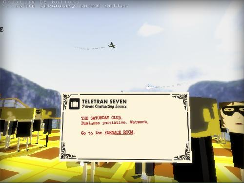

Art 321 Evan Argenal - Assignment 8a Solution
Interaction - "Gravity Bone"

The interactive narrative I chose was "Gravity Bone".
I played through two tasks (the whole game) which took me about 15 minutes (while documenting my choices as well) and
these are my answers to the following questions:
1. How does the allowed interaction keep the narrative on track? How does it permit variations and branches?
In Gravity Bone you are hired to carry out tasks, and by giving the player an open environment to explore and figure out,
I think the linear style of map keeps the player on track. The player is still able to interact with objects in the
environment, but they won't get lost as it's a pretty straightforward game. This game doesn't offer too much variation
compared to the other narratives we were able to choose, but you can still create little branches by interacting with the
entities in the environment such as the people or the objects.
2. Describe the nature of the graphical quality and how it is relevant to the story.
I noticed the art style chosen was very "blocky" (similar to Minecraft or Roblox), but I don't believe it was relevant
to the story. I think it was supposed to make it less serious and more "cartoon-like", as the game can appear silly at times.
I noticed the creator of the game used bright colours to help denote an objective to the player, and this definitely helps with
the flow of the game as it prevents the player from getting stuck in one area.
Overall I think the developer chose this graphical style/quality to comply with the game engine and make it simple enough for
most computers to be able to run it.
3. Describe the nature of the interaction and how it influences choices and how the player feels.
In this game, the player's main form of interactions are an "interact" key (E), and the items in their inventory for which they
are used for certain events in the game. For example, the user is given a can of freon and a hammer so they can break locks, so
they must use those items together to break locks on doors to progress. When the player is given these items, they aren't told where
to use them, but they are supposed to assume they are used to break locks as the linear style of map gives the player only one real
choice there. Overall, I think the interactions in this game are meant to guide the player in the right direction rather than influence
alternate choices.
Description of Actions and Results
Task One
First thing I see is I’m in an elevator to what seems like a rooftop party. I get off the elevator, look around, and see instructions on
how to play the game. I look at my invitation which is telling me to go to the furnace room. I see a door to my right and try to open it
but nothing happens. I then see a staircase to my left and go up it. I see waiters opening the door to the furnace room, so I sneak it when
one is leaving that door. I open the next door inside by pressing “E” on the doorknob. Inside, the game teaches me that I can jump by pressing
“Space”, so I jump around the furnace room to see a briefcase. I open the briefcase to be greeted with a quest and some items. The message
in the briefcase is telling me to “Deliver this drink to the man with red hair”. I take this drink and the waiter outfit to blend in and
leave the furnace room. I go back to the party and look around first downstairs, then upstairs to see him at the edge of the balcony on the
top floor. I approach him and give him his drink, where he quickly drinks it all. He lets out a green gas, which promptly I am instructed to
look for an exit. I go back downstairs and look for an exit, where I see a door that is next to the starting elevator. This door happens to be
the same door I tried interacting with first when I started the game. I open the exit door, get in the exit zone, and press the button which
completes the contract. I learn more about my contract information such as what the drink I gave that man was, and this marks the end of task one.
Task Two
I begin my second task by getting off the elevator, similar to how task one began. I look out the window to my right and notice the environment; there is a rainstorm outside and I’m in some sort of city denoted by the tram system. I look at my contract for this task, and it tells me to go to the furnace room again. I try and talk to the other individuals in the lobby, but I can’t understand what they are saying to me. I see a door to the furnace room and I open it to be greeted by a mini obstacle course. After I make it through, I see a hammer and a can of pressurized freon waiting for me. I grab them and the game teaches me how to use items in my inventory. I then see the only door out of here but notice a lock on it. Piecing together what I have in my inventory, I see that I must freeze the lock and smash it with my hammer, which is exactly what I do to continue on. After moving through, I see more doors with locks on them, so I do the same process again. I come to a “T” junction. I turn right and open a door that seems to be meant for a later section, so I turn around and go down the last path I haven’t explored. I see a briefcase again, and upon opening it, I am told I need to “Photograph 5 birds using the camera.” I grab the camera and continue to the door on the right. I open another door which takes me to a corridor and outside of the furnace room. I notice two bright red doors, each with two locks on them. I smash them open with the items at my disposal, and open the first red door. I see a bird sitting in the room, so I take out my camera and take a picture of it. Upon doing so, the bird then falls over and explodes. This shocks me as it was very unexpected. I then go to the next door and see another bird. I take the picture and the bird falls over and explodes again. After taking photographs of 2 birds so far, I go down the corridor and see another door which takes me outside. I can see the tram cars zipping by and another red door with locks on it. I do the same process as before to remove the locks and get in to photograph the third exploding bird. I notice there are red doors further outside that must contain the birds, and some scaffolding/vents nearby I could stand on. I go inside to try and break the windows with my hammer to get outside, but it doesn’t do anything. I then go outside and see the flag poles flashing, meaning I might be able to jump on them. I take a leap of faith and realize they are platforms I can stand on. After some jumping around outside on the platforms, I make it over to the last two red doors, where I repeat the same process of smashing the locks, photographing the bird, then it explodes. After photographing all 5 birds, I finish my task and now have to find an exit. I see a door which must lead me to the exit, so I go through it. I see two sets of doors that don’t seem to take me anywhere, but I see a vent with a red glow which seems to be the right way. I go through the vent and it takes me back to the top of the furnace room. From there I can walk back to the starting room. As I’m trying to leave, a woman shoots me from behind and takes my camera. She shoots the window and escapes through it. There’s blood everywhere. I follow her through the window and chase her down through the city. I chase her through a tunnel and we go through a vent, jump down through an air duct, and land on a table in a room full of people having dinner. I chase her across the table and run through the door into a hallway. She goes back outside and I continue chasing her. As I turn a corner, she is turned around with a gun. She shoots me and I begin falling off the catwalk in slow motion. While falling, I start having flashbacks such as a car chase with shooting, a woman’s face, and a track race where I see a woman winning. The game ends there.